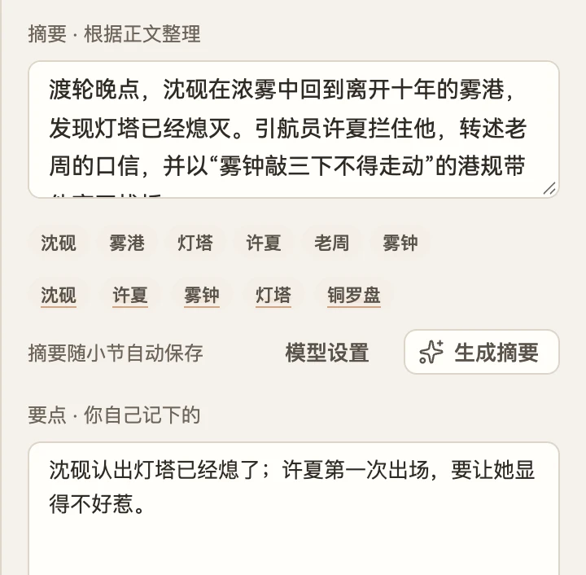
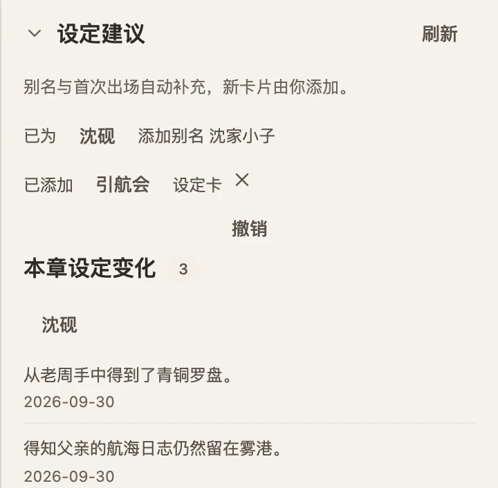
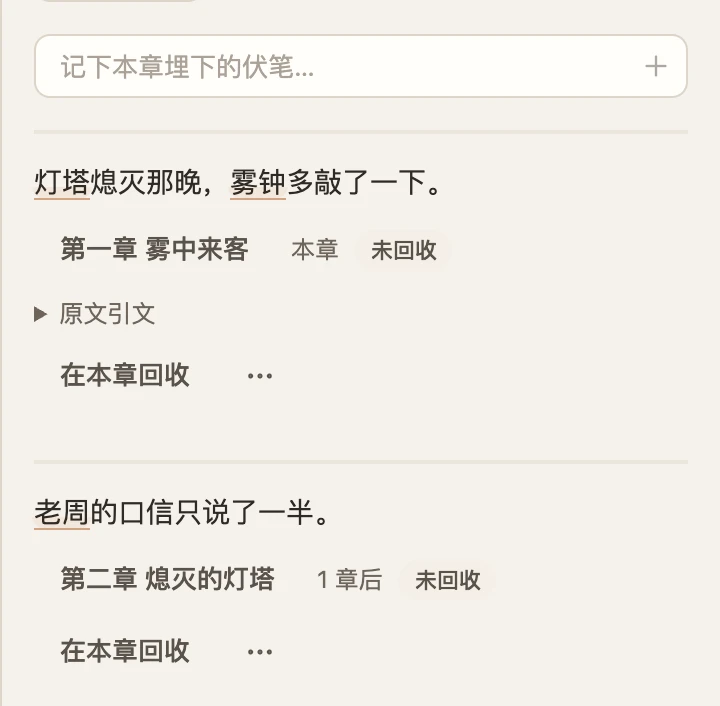
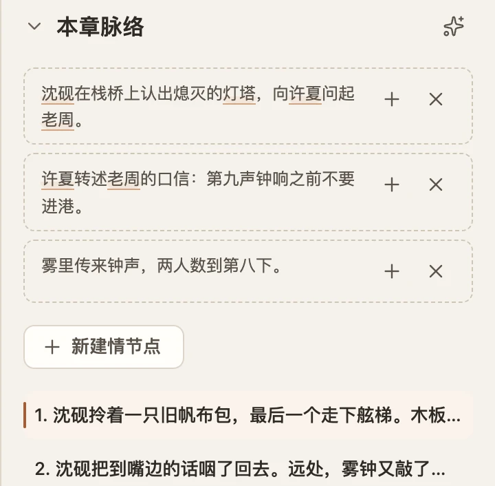
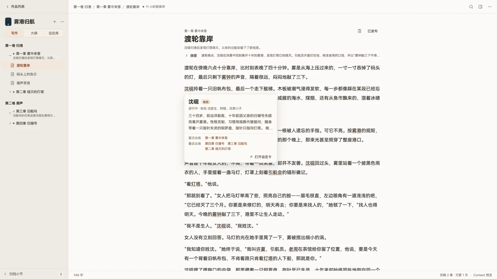

NovelKit 0.1 · 本地优先的网文写作台
你只管写。
其余的，帮你整理好。
写给日更、几百章、一个人写的连载作者。你敲正文，摘要、设定卡、伏笔和情节点在旁边自己填好。
01 · 自动补全
自动补全，
码字更高效。
停一下，下一句以灰字浮在句尾。按 Tab 接受，思路不断，接着写。
补全读过你的设定卡和前文摘要，接的是这本书的下一句。
第一章 雾中来客
渡轮靠岸
渡轮在傍晚六点十分靠岸，比时刻表晚了四十分钟。雾是从海上压过来的，一寸一寸吞掉了码头的灯，最后只剩下雾钟的声音，隔着很远，闷闷地敲了三下。雾里传来第二声钟响，比先前更近了一些。
02 · 参考面板
你写正文，
旁边自己记好。
正文旁的参考面板跟着你写的内容更新。自动追加，随时可撤销。
-

摘要
写完一章，摘要已经在那儿了。
-

设定卡
新角色、新设定，自动记进设定卡。
-

伏笔
埋下的伏笔，帮你记着。第 300 章也记得第 12 章。
-

情节点
本章脉络，从正文里理出来。
03 · 一张桌子
写作、大纲、设定库，
都在一张桌子上。



- 本地优先
- 稿子是你文件夹里的 Markdown，随时拿得走。
- 自动保存
- 边写边存，修改记录可恢复。
- 本地模型
- 补全和整理可以全在你自己的电脑上跑。
你只管写。
其余的，帮你整理好。
下载 测试版
测试版未签名：macOS 右键「打开」，Windows 在 SmartScreen 点「更多信息 → 仍要运行」。快速开始 · 所有版本 · 遇到问题？在 GitHub 反馈